BEYOND THE CASTLE WALLS
The wizarding world extends far beyond Hogwarts. From the shops of Diagon Alley to the cozy pubs of Hogsmeade, this category captures the diverse individuals—including the Muggles who cross paths with magic—who populate the everyday life of the magical archives.
CHARACTERS OF THE GROUP
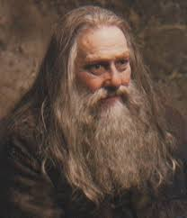
ABERFORTH DUMBLEDORE
Aberforth Dumbledore was Albus's younger brother, a man who lived deliberately in the shadow of his illustrious sibling. As barman at the Hog's Head pub in Hogsmeade, Aberforth chose a life of simplicity and relative obscurity, seemingly content with his role as provider of butterbeer and quiet refuge. Yet beneath his gruff exterior lay genuine heroic commitment to the Order of the Phoenix's cause.
Aberforth's love for his goats and his modest lifestyle stood in stark contrast to his brother's world-changing ambitions. Yet when the Dumbledore Army needed secret entrance to Hogwarts during the final battle, it was Aberforth who provided it through the magical passage connected to the Hog's Head. His seemingly unremarkable life contained quiet heroism that supported the ultimate victory against Voldemort.
GARRICK OLLIVANDER
Garrick Ollivander was the world's most renowned wandmaker, a master craftsman whose wands were used by the vast majority of professional wizards. His famous principle, "the wand chooses the wizard," reflected his belief in the mystical connection between wand and user. Ollivander's knowledge of wand lore and his meticulous craftsmanship made him invaluable to the wizarding community.
Ollivander's kidnapping by Voldemort and forced servitude to create wands for the Dark Lord placed him in moral jeopardy. Yet his ultimate liberation and return to his craft demonstrated his survival and resilience. His unique knowledge and moral integrity made him a valued figure in post-war wizarding society.
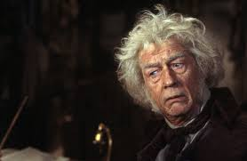
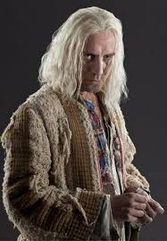
XENOPHILIUS LOVEGOOD
Xenophilius Lovegood was editor of the eccentric publication "The Quibbler," a magazine known for its outlandish conspiracy theories and alternative perspectives on magical news. His obsession with creatures that most wizards considered mythical or non-existent reflected his unconventional thinking and genuine pursuit of truth despite widespread ridicule. His devotion to his daughter Luna transcended any other loyalty.
When the Ministry and Voldemort's regime sought Harry Potter, Xenophilius attempted to trade Harry for Luna's safety, a desperate act revealing both the depth of his paternal love and his willingness to compromise morality under extreme pressure. His survival of the war left him to rebuild his life and continue his controversial journalism, a symbol of those whose survival depended on compromise.
RITA SKEETER
Rita Skeeter was a journalist for the Daily Prophet whose sensationalist approach to news transformed her into either a source of entertainment or scandal depending on one's perspective. Her unregistered status as a Animagus allowed her to gather information through eavesdropping in her beetle form, a practice that blurred ethical lines between journalism and invasion of privacy. Her Quick-Quotes Quill twisted statements into sensationalized narratives.
Skeeter's coverage of Harry Potter oscillated between glorification and vilification depending on political winds and her personal interests. Her exposure as an Animagus by Hermione Granger provided leverage to control her more egregious distortions. Yet even post-war, her sensationalist tendencies continued, demonstrating that some individuals prioritize profit and notoriety over truth.

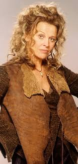
MADAM ROSMERTA
Madam Rosmerta owned the Three Broomsticks Inn in Hogsmeade, a establishment that served as an informal social hub for Hogwarts students and visiting wizards. Her warm hospitality and genuine interest in her patrons made her beloved across the wizarding community. However, her vulnerability to manipulation exposed her as a target for Death Eaters seeking leverage and control.
Rosmerta's placement under the Imperius Curse by Death Eaters forced her to betray those who frequented her establishment. The magical violation of her free will represented a common crime during Voldemort's regime. Her recovery and survival post-war allowed her to rebuild her life and reputation, though the trauma of magical possession lingered.
TOM (LEAKY CAULDRON)
Tom was the longtime landlord of the Leaky Cauldron, a pub serving as the primary entry point between the Muggle and wizarding worlds. His warm hospitality and knowledge of his diverse clientele made him an invaluable resource for travelers and locals alike. Tom's discretion and friendly manner created an environment where witches and wizards could gather safely.
Tom witnessed the transformation of the wizarding world from Voldemort's first rise and fall through his second return and ultimate defeat. His consistent presence through these turbulent times made him a stabilizing force in magical London, a reminder of continuity and normalcy amid chaos. His role as humble innkeeper contained the quiet heroism of those who maintained community gathering places despite surrounding darkness.
.jpeg)
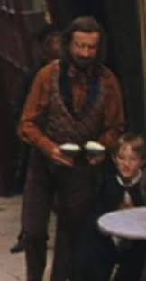
FLOREAN FORTESCUE
Florean Fortescue owned an ice-cream parlor on Diagon Alley, a cheerful establishment that provided refreshment and simple joy to wizarding children and adults. His kindness to Harry Potter, including helping with history homework during the summer, demonstrated his genuine care for his community beyond mere commercial interest. His business represented the ordinary pleasures of magical life.
Fortescue's kidnapping by Death Eaters and subsequent murder represented the casual brutality of Voldemort's regime toward innocent shopkeepers. His elimination symbolized the dark regime's willingness to destroy all aspects of normal, peaceful wizarding life. His death left Diagon Alley diminished, one small piece of a larger tragedy.
MR. BORGIN
Mr. Borgin co-owned the infamous Borgin and Burkes shop, a dealer in dark magical artifacts and macabre curios. His business model depended on serving clients who desired items of questionable legality and disturbing nature. Borgin's professional relationships with pure-blood families and Death Eaters positioned him at the intersection of commerce and Dark magic.
Borgin's fear of his clientele, particularly the Malfoy family, revealed his vulnerability despite his position as a sophisticated dealer in dangerous items. His survival through neutrality and pragmatic service to whoever held power demonstrated his lack of ideological commitment. Post-war, he continued his morally ambiguous business, a symbol of how commerce could survive regime changes.
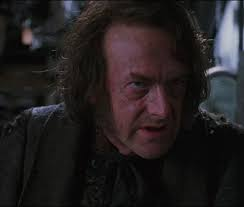

THE FAT LADY
The Fat Lady was a portrait guarding Gryffindor Tower, a magical sentient painting who enforced password requirements for house entry. Her personality manifested as plump, jovial, and sometimes temperamental, particularly when disturbed. Her role as gatekeeper made her essential to house security while her occasional rebelliousness added character to the house's daily life.
When Sirius Black attacked the Fat Lady's portrait in pursuit of entry to Gryffindor Tower, she fled her frame in terror. Her recovery and return symbolized the castle's resilience despite external threats. Her acceptance of temporary replacement by Sir Cadogan during her absence demonstrated the flexibility required to maintain house functions even during magical emergencies.
SIR CADOGAN
Sir Cadogan was a aggressive and reckless portrait of a medieval knight that temporarily replaced the Fat Lady as guardian of Gryffindor Tower. His excessive bravery and insistence on challenging students to magical duels made him a chaotic and unpredictable gatekeeper. His theatrical personality and medieval sensibilities created more problems than solutions to house security.
Cadogan's brief tenure as Gryffindor guardian demonstrated the importance of selecting the right individual for positions of responsibility. His eventual removal and return to his permanent location revealed that even magical portraits needed replacement when their personality and approach became counterproductive. His failure highlighted the value of the Fat Lady's more measured guardianship.
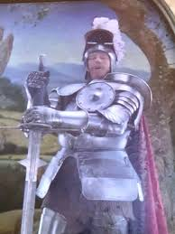
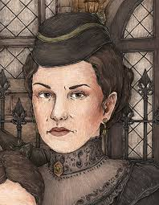
WALBURGA BLACK
Walburga Black was Sirius's abusive mother, whose portrait hung in the entrance hall of her family home at 12 Grimmauld Place. Even in death, her malevolent personality dominated the house through her enchanted portrait that screamed vicious insults and blood-traitor accusations at all who passed. Her rage at her own family's perceived betrayal of pure-blood values personified the toxic aspects of pure-blood supremacist ideology.
Walburga's portrait became a symbol of the Blacks' dysfunctional legacy. Her constant verbal assaults created psychological oppression within the Order's headquarters. Her eventual magical silencing by Order members represented the rejection of her poisonous ideology and the reclamation of space from her toxic influence.
ARIANA DUMBLEDORE
Ariana Dumbledore was Albus's younger sister, a victim of Muggle-born persecution and a tragic figure whose suffering shaped her brother's worldview profoundly. Attacked by Muggle boys for her magical talents, she suffered trauma that caused her magical abilities to become chaotic and uncontrolled. Her unpredictable magical explosions made her a danger to those around her, a burden that haunted her family.
Ariana's death during the confrontation involving her three gifted siblings devastated Albus emotionally and philosophically. The tragedy of her broken potential and the unclear circumstances of her death haunted Dumbledore throughout his life. Her portrait remained hidden from public view, her story known only to those closest to Albus, a private grief of one of history's greatest wizards.
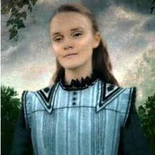
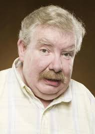
VERNON DURSLEY
Vernon Dursley was Harry Potter's uncle, a thoroughly ordinary Muggle businessman whose hatred of magic extended to abusive treatment of his young nephew. His determination to suppress Harry's magical nature and his cruelty toward the boy revealed a man whose ordinariness masked genuine malice. His repression of the magical world was a defense mechanism born of fear and incomprehension.
Vernon's forced flight and hiding during Voldemort's rise exposed him to magical world dangers he had spent his life denying. His cowardice when faced with real magical threats stripped away his pretense of superiority. His post-war return to Muggle society symbolized the survival of those who remained fundamentally unchanged by exposure to the wizarding world, their prejudices intact despite evidence of magic's reality.
PETUNIA DURSLEY
Petunia Dursley was Harry's aunt, a woman whose deep-seated resentment of her sister Lily and her magical abilities festered for decades. Her envy of Lily's magical talents and her feeling of inferiority drove her to suppress Harry's magic and mistreat him throughout his childhood. Yet beneath her bitterness lay a woman capable of ultimate sacrifice: the protective charm she created through her unwilling sacrifice of her own sister.
Petunia's knowledge of the magical world, which she revealed during the final battle, demonstrated that she understood far more than she had admitted throughout Harry's life. Her eventual shelter of Harry, though reluctant and accompanied by mistreatment, ironically provided the exact protection he needed. Her complex character reflected the tragic consequences of envy and resentment allowed to poison a life.
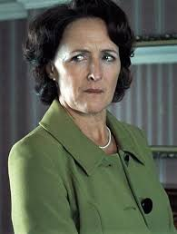
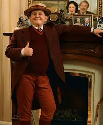
DUDLEY DURSLEY
Dudley Dursley was Harry's cousin, a spoiled Muggle boy who bullied Harry throughout their childhood. Pampered by his parents and given everything he desired, Dudley became an instrument of his parents' abuse toward Harry. His initial cowardice and cruelty contrasted sharply with Harry's growing magical abilities and moral courage.
Dudley's encounter with Dementors during his attack near the Dursleys' home forced him to confront genuine evil and genuine fear, experiences that began his transformation. By adulthood, Dudley had changed sufficiently to show Harry gratitude and genuine affection. His arc exemplified that even those raised in prejudice and cruelty could eventually find redemption through exposure to genuine hardship.
MARGE DURSLEY
Marge Dursley was Vernon's sister, a coarse woman obsessed with dog breeding and equally obsessed with insulting Harry's deceased parents. Her vituperative attacks on Lily and James Potter revealed her participation in her family's campaign of psychological abuse toward Harry. Her volatile temper and aggressive personality made her dangerous even without magical abilities.
Marge's magical inflation by Ron Weasley's rogue Bludger represented a moment of justified magical retaliation against a person who had spent years hurling verbal abuse at a defenseless boy. Her eventual return to normal and memory modification left her unaware of her magical assault, sparing her from permanent awareness of her humiliation. Her survival and return to her ordinary life represented the resilience of Muggle characters in a magical world.
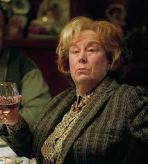

MR. GRANGER
Mr. Granger was Hermione's father, a Muggle dentist whose practical wisdom and genuine support for his daughter's magical education contrasted sharply with the Dursleys' hostility toward the magical world. His acceptance of his daughter's magical abilities demonstrated genuine parental love transcending fear of the unknown. His willingness to learn about the magical world reflected intellectual openness.
Mr. Granger represented the best of Muggle-wizarding integration: acceptance, support, and genuine partnership. His survival of the war and his continued relationship with his daughter in the post-war world ensured that Muggle-wizard families could continue functioning based on love rather than prejudice.
Mr. Granger was Hermione’s father. He was a dentist. He supported Hermione fully. His memory was altered for safety.
MRS. GRANGER
Mrs. Granger was Hermione's mother, a Muggle woman who embraced her daughter's magical heritage with genuine enthusiasm and support. Her partnership with her husband in accepting Hermione's abilities demonstrated parental love transcending the boundaries between magical and Muggle worlds. Her presence in the post-war wizarding community symbolized the successful integration of Muggle families into magical society.
Mrs. Granger was Hermione’s mother. She was also a dentist. She trusted Hermione’s decisions. Her memory was later restored.


FRANK BRYCE
Frank Bryce was a Muggle caretaker employed by the Riddle family to maintain their ancestral home. Suspected of murdering the Riddle family in his youth but ultimately acquitted, Bryce lived with the stigma of suspicion for the rest of his life. His Muggle vulnerability made him defenseless against genuine magical evil when Tom Riddle chose to use the abandoned house as a base for his operations.Frank Bryce was a Muggle gardener. He worked at the Riddle House. Frank overheard Death Eaters. He was murdered by Voldemort.
STAN SHUNPIKE
Stan Shunpike was a conductor on the Knight Bus, a young wizard whose job involved transporting magical travelers across London via magical vehicle. His friendly demeanor and willingness to chat with passengers revealed a good-natured young man attempting to make a living in the magical transport industry. His eventual capture as a prisoner revealed his vulnerability to the chaos of the wizarding war.Stan Shunpike was the conductor of the Knight Bus. He spoke with a strong accent and seemed simple-minded. Stan was wrongly imprisoned in Azkaban. He was later freed after Voldemort’s defeat.
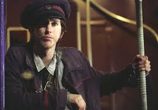

ERNIE PRANG
Ernie Prang was the elderly driver of the Knight Bus, a cautious wizard whose careful navigation and concern for passenger safety characterized his approach to the dangerous job of magical transport. His professionalism and experience made him a reliable fixture in magical transportation infrastructure.Ernie Prang was the elderly driver of the Knight Bus. He had poor eyesight. Ernie relied on Stan for navigation. Despite this, he drove magically well.
THE SHRUNKEN HEAD
The Shrunken Head was mounted on the Knight Bus. It provided directions and commentary. The head spoke rapidly and loudly. It added chaos to every journey.